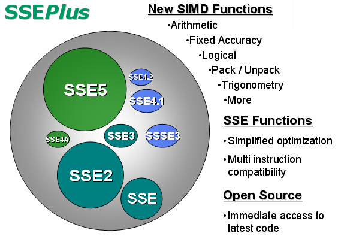

| Thank you for your interest in SSEPlus! Here are a few quick links to get you started:
This project is currently under construction. Thank you for your patience! To use SSEPlus in your project, include the files found in "SSEPlus_Root/SSEPlus/include". For an introduction to SIMD programming try this entry on MSDN MMX SSE and SSE2 Intrinsics
|

|
1.5.4